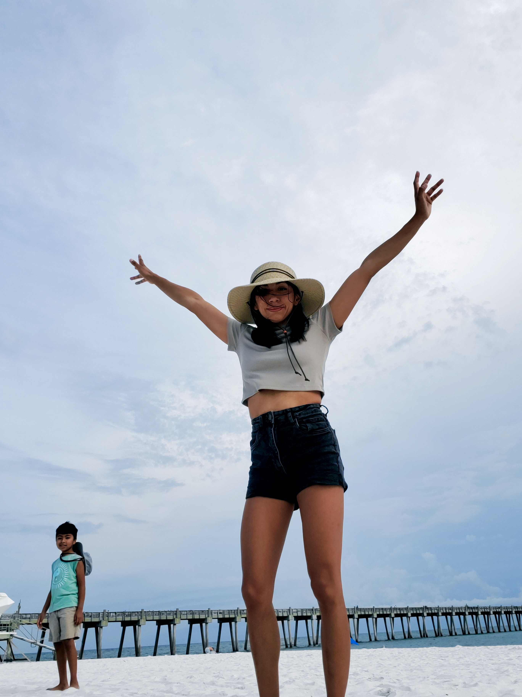

Who am I?
Hi! Thanks for taking the time to learn a little more about me. My name is Monica Ramirez, I currently live in Texas, yeehaw? Im a an aspiring software engineer who is learning and honing her craft in this tech field that is still so alien to me.
What lead me here?
I was a stay at home mom and wife for quite some time. I am incredibly grateful to be able to have had that opportunity. I got see watch my son grow up and experience so many things with him. I did go so college, but I never believed in myself enough to push myself hard enough. I gave up on myself and tried something else. I ventured into the networking world through Cisco, but I didn't enjoy. I work retail... and I'm tired of it. I want more, I know I can do more. Somehow I found coding, it was the first time in a long time I felt truly happy. I got sucked in and I haven't left. I'm in this moment in my life where I'm learning. That's my favorite word right now.
Its never too late to learn
The biggest lesson my son has taught me is that we are always learning. Curiosity is important. Never be afraid to ask questions. I'm here for that, to push harder than I have for myself and for my son. I want to know that I had a hand in creating something that helps my peers accomplish something. I want to work for Nasa or Boeing. I want to be part of a team and contribute. I've always been a helper, someone who likes to create and to crack my head to solve problems.
Random Facts
In my free time, you can find me in the gym lifting weights. I am an avid music fan, I will listen to everything from Rammstein to Valentin Elizalde to some Connie Francis. I also enjoy drawing, especially faces. I love puns and dad jokes. The more awkward and not funny the better. As I mentioned before I enjoy bird watching. Birds are literally dinosaurs. Also I love dinosaurs, my favorite being the Spinosaurus.
